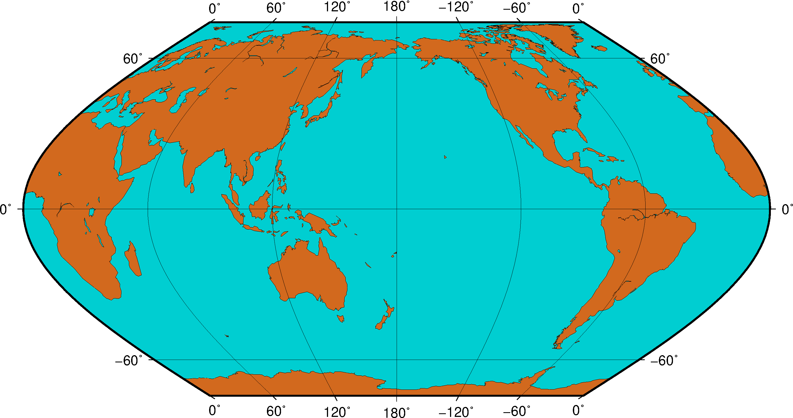

GMT系列之安装
文章目录
目前GMT6.0使用并未普及，仍旧针对GMT5版本进行说明介绍。主要参考“GMT中文社区”。
GMT，全称Generic Mapping Tools，中文一般译为“通用制图工具”，是地球科学最广泛使用的制图软件。GMT具有强大的绘图功能和数据处理功能。
绘图方面，GMT支持绘制多种类型的底图，包括30多种地图投影、笛卡尔线性坐标轴、对数轴、指数轴、极坐标系，支持绘制统计直方图、等值线图、2D网格图以及3D视角图等，也支持绘制线段、海岸线、国界、多种符号、图例、色标、文字等。
数据处理方面，GMT具有数据筛选、重采样、时间序列滤波、二维网格滤波、多项式拟合、线性回归分析等功能。
01 windows平台安装
https://docs.gmt-china.org/5.4.5/install/windows/
02 linux平台安装
https://docs.gmt-china.org/5.4.5/install/linux/
03 windows平台GMT中文支持
https://docs.gmt-china.org/5.4.5/install/cn-windows/
04 linux平台GMT中文支持
https://docs.gmt-china.org/5.4.5/install/cn-linux/
05 GMT中文使用手册下载
06 GMT实例
|
|

文章作者 GSir
上次更新 2019-04-08